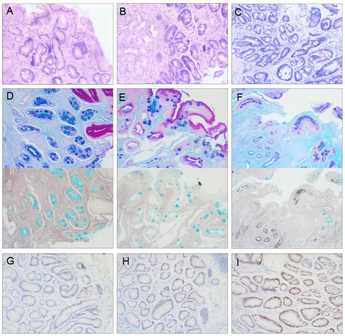
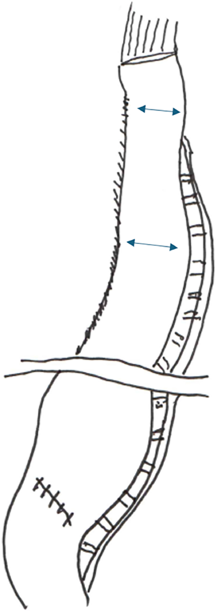

Рак пищевода и желудка
Предраковые заболевания и факторы риска рака желудка
На долю рака приходится 98 % злокачественных опухолей желудка. Отправная точка его развития — атрофический гастрит, при котором железистый эпителий замещается соединительной тканью. Утрата секреции соляной кислоты называется ахлоргидрией. К ней также приводят резекция желудка, ваготомия и длительный приём антисекреторных препаратов.
При отсутствии кислотного барьера размножающиеся бактерии запускают конверсию нитратов: нитраты из пищи восстанавливаются ферментами бактерий до нитритов, которые реагируют с аминами с образованием нитрозаминов. Нитрозамины повреждают ДНК клеток и вызывают мутации.
Аденоматозные полипы (неопластические) относятся к облигатному предраку с высоким риском малигнизации, в отличие от воспалительных и гиперпластических. У пациентов с полипами желудка также обследуют толстую кишку.

К факторам риска также относятся семейный анамнез рака желудка, возраст 50–70 лет и мужской пол. Сочетание нескольких факторов существенно повышает риск и требует обязательного эндоскопического наблюдения с биопсией.
Главный практический вывод раздела: атрофический гастрит с ахлоргидрией и аденоматозные полипы — это не фоновые находки, а облигатные предраки, требующие планового эндоскопического контроля.
Классификация рака желудка: глубина пенетрации, ранние и поздние формы, система TNM
Рак составляет 98 % злокачественных опухолей желудка, а доброкачественные образования — менее 2 % (среди них — аденоматозные полипы).
Пенетрация опухоли — глубина прорастания злокачественных клеток в слои стенки желудка (слизистый, подслизистый, мышечный, субсерозный, серозный).
Ранний рак желудка ограничен слизистой (T1a) и подслизистой (T1b) оболочками вне зависимости от поражения регионарных лимфоузлов. При нём возможна эндоскопическая резекция, тогда как при распространённом раке необходима открытая операция.
Макроскопические формы раннего рака: тип I (выступающий), IIa (поверхностно приподнятый), IIb (плоский), IIc (поверхностно вдавленный), III (углублённый/язвенный) и комбинированные (например, IIc+III).
Распространённый рак классифицируется по системе TNM (Tumour, Noduli, Metastasis).
| Категория T | Глубина пенетрации | Макроскопические формы раннего рака (при T1) | Клиническая стадия TNM |
|---|---|---|---|
| T1a | Слизистая оболочка | I, IIa, IIb, IIc, III и комбинированные | 0–I (ранний рак) |
| T1b | Подслизистая оболочка | Те же формы, но с более выраженной инвазией основания | I (ранний рак) |
| T2 | Мышечная оболочка | — | II |
| T3 | Субсерозная клетчатка | — | II–III |
| T4a | Серозная оболочка (висцеральная брюшина) | — | III |
| T4b | Прорастание в соседние органы | — | IV |
Категории T отражают глубину врастания от T1 (слизистая/подслизистая) до T4b (прорастание в соседние органы). Категория N характеризует поражение узлов: N0 (0), N1 (1–2), N2 (3–6), N3 (7 и более). M0 указывает на отсутствие отдалённых метастазов, M1 — на их наличие (всегда IV стадия). Дооперационная оценка TNM определяет план хирургического лечения и необходимость химиотерапии.
Особенности местного распространения рака пищевода
Пищевод (длина около 35 см) на всём протяжении лишён серозной оболочки. Отсутствие этого барьера приводит к тому, что опухоль, пройдя мышечный слой, быстро распространяется в клетчатку средостения к трахее, бронхам, аорте и перикарду.
Второй механизм — раковый лимфангит (инфильтрация лимфатических сосудов стенки), при котором опухолевые клетки распространяются вдоль органа на 5–6 см от видимого края. Это требует отступать дальше при определении линии резекции. Инфильтративные формы составляют 10–15 % случаев. Оценку глубины поражения проводят с помощью эндоУЗИ.
Регионарное метастазирование зависит от отдела пищевода:
- Верхняя треть — в глубокие шейные и паратрахеальные узлы;
- Средняя треть — в узлы бифуркации трахеи и заднего средостения;
- Нижняя треть — в параэзофагеальные и чревные узлы (субдиафрагмально).
отсутствие серозного барьера в сочетании с раковым лимфангитом делает границы опухоли пищевода принципиально шире, чем они выглядят при любом визуальном методе исследования, что определяет объём резекции и лимфодиссекции.
Дисфагия как ведущий клинический признак рака пищевода
Пищевод имеет длину около 35 см и широкий просвет, поэтому опухоль долго остаётся незамеченной. К моменту появления нарушений глотания процесс заходит далеко.
Дисфагия (от греч. dys- + phagein — есть, глотать) — затруднённое или болезненное прохождение пищи по пищеводу вплоть до афагии (полной невозможности глотания). У 25% больных дисфагия имеет функциональный характер, а у 75% — органический (каждый десятый случай дисфагии требует хирургического вмешательства). Рак — одна из главных органических причин.
Первые симптомы возникают ещё при инвазии в пределах стенки: из-за нарушения перистальтики пищевой комок задерживается на 1–2 секунды. Это прилипание пищи — самый ранний субъективный сигнал опухоли.
| Степень | Характер нарушения | Типичная жалоба | Соответствующая стадия |
|---|---|---|---|
| I | Эпизодическое затруднение при глотании твёрдой пищи | «Мясо и хлеб иногда как будто застревают» | Опухоль в пределах слизистой и подслизистой оболочки |
| II | Постоянное затруднение при глотании твёрдой пищи; мягкая пища проходит свободно | «Твёрдое не могу есть совсем, перехожу на каши и супы» | Инвазия мышечного слоя; опухоль перекрывает часть просвета |
| III | Затруднение при глотании мягкой и полужидкой пищи | «Протёртое тоже идёт с трудом, приходится запивать» | Значительное сужение просвета; распространение за пределы мышечного слоя |
| IV | Полная непроходимость — афагия; не проходит даже вода | «Ничего проглотить не могу, выходит обратно» | Критическое сужение просвета; как правило, III–IV стадия по TNM |
При органической дисфагии застрявший комок запивается водой, симптомы повторяются и развиваются от твёрдой пищи. При функциональной — затруднения непостоянны, провоцируются горячей или холодной пищей и могут исчезать при проглатывании плотного комка.
При запущенном раке возникают объективные признаки:
1. Землистый оттенок кожи (серовато-жёлтый при белых склерах) — следствие хронического голодания, анемии и интоксикации.
2. Икота — возникает при сдавлении диафрагмы. При этом нарушается экскурсия диафрагмы (суммарное смещение купола при дыхании, составляющее в норме несколько сантиметров).
Рак кардиального отдела проявляется болью в эпигастрии под мечевидным отростком с иррадиацией в сердце. При распространении на пищеводный сфинктер присоединяется дисфагия, нарастающая снизу вверх.
Главный вывод раздела: дисфагия при раке пищевода нарастает стадийно — от прилипания твёрдой пищи до полной афагии, — и каждая следующая степень означает более глубокую инвазию; появление землистого оттенка кожи и икоты свидетельствует о запущенном процессе, а сочетание иррадиирующих в сердце болей с дисфагией указывает на рак кардиального отдела.
Метастазирование рака желудка и пищевода: регионарные и отдалённые пути
Раковые клетки выявляются в лимфатических щелях стенки пищевода на 5–6 см от края опухоли, поэтому хирургический отступ должен превышать это расстояние.
Среднегрудной отдел пищевода (от дуги аорты до нижнелёгочных вен) метастазирует в грудные лимфоузлы, а также в область кардии и по ходу чревного ствола (крупный артериальный ствол от аорты под диафрагмой к желудку, печени и селезёнке). Диссеминация идёт вверх и вниз одновременно.
Восходящий путь через грудной проток (впадающий в венозный угол слева при слиянии левой подключичной и левой внутренней яремной вен) приводит к формированию вирховского метастаза (Virchow's node) — плотного узла в левой надключичной ямке. Он свидетельствует о выходе за пределы резектабельности.
Метастазирование в пупок происходит по эмбриональным сосудам и круглой связке печени. Уплотнение в области пупка требует проведения гастродуоденоскопии или рентгенологического исследования желудка.
Перитонеальная диссеминация — рассев клеток по брюшине (сальник, петли кишки, таз, диафрагма) после прорастания серозной оболочки желудка. Выявляется при лапароскопии и переводит пациента в категорию неоперабельных.
Гематогенные метастазы рака желудка поражают печень через воротную вену, реже — лёгкие и кости (позвоночник).
Главный практический вывод таков: пути метастазирования рака желудка и пищевода не совпадают с анатомическими границами органа.
Осложнения местно-распространённого рака пищевода
Бронхопищеводный свищ (или трахеопищеводный свищ на уровне бифуркации) — канал между пищеводом и бронхом (чаще левым главным или долевым), возникающий из-за прорастания опухоли и некроза. Клиника: кашель при глотании жидкости, быстрая аспирационная пневмония, гнилостная мокрота, затекание контраста. Тактика паллиативная: эндоскопическое стентирование пищевода саморасширяющимся протезом, антибиотики, зондовое или парентеральное питание.
Прорастание опухоли в аорту при T4-стадии ведет к **аррозии аорты** (от лат. arrodere — подгрызать) — разрушению её стенки. Вызывает молниеносное кровотечение с летальностью почти 100%. Кровотечению могут предшествовать «сигнальные» эпизоды крови в рвоте. Тактика: отмена лучевой терапии, исключение травмирующих манипуляций, паллиативная помощь.
Осложнения рака желудка III–IV стадий
Распадающаяся опухоль с некрозом центральных отделов вызывать скрытое капиллярное кровотечение и анемию. При разрушении крупных ветвей чревного ствола возникает массивное кровотечение из опухоли с рвотой кровью и меленой (чаще при локализации на малой кривизне). Неотложная тактика: восполнение объёма, ЭГДС. При неэффективности эндоскопического гемостаза проводят экстренную операцию (резекцию или перевязку сосуда).
Перфорация опухоли — прободение стенки желудка в зоне некроза с выходом некротических масс в брюшную полость, приводящее к быстрому перитониту и сепсису. Боль внезапная («кинжальная»), картина может быть стёртой из-за инфильтрата. Подтверждается интраоперационно (свободный газ и некроз). Лечение: резекция желудка (при подвижной опухоли) либо ушивание дефекта с дренированием брюшной полости и антибиотикотерапией.
Операбельность и резектабельность при раке пищевода
Перед операцией хирург решает два вопроса: первый касается пациента, второй — опухоли.
Операбельность — способность пациента перенести операцию и выжить после неё. Оценивается до обследования опухоли по функциональному состоянию (сердце, лёгкие, печень, нутритивный статус, возраст, сопутствующие болезни) с помощью спирометрии, эхокардиографии, оценки нутритивного статуса, шкал ECOG или Карновского.
Пациент считается неоперабельным, если:
- дыхательная недостаточность не позволяет перенести однолёгочную вентиляцию при торакотомии;
- критически снижена фракция выброса левого желудочка;
- тяжёлая кахексия делает анастомоз заведомо несостоятельным.
Резектабельность — характеристика опухоли и её отношения к окружающим структурам. Резектабельная опухоль полностью удалима в пределах здоровых тканей. Нерезектабельная — технически не может быть убрана целиком из-за врастания в жизненно важные структуры или отдалённых метастазов.
Критерии нерезектабельности:
- Местные: прорастание в аорту, трахею или бронх (риск аррозии сосуда или бронхопищеводного свища). Прорастание в грудной проток или паралич возвратного гортанного нерва меняют объём операции, но не исключают её.
- Системные: перитонеальная диссеминация, поражение отдалённых лимфатических узлов (вирховский метастаз слева на шее), отдалённые гематогенные метастазы в печень, лёгкие или кости. Метастазы в шейные узлы указывают на запущенный процесс, но их оценивают индивидуально по уровню опухоли. Опухоль без поражения лимфоузлов резектабельна (ранние стадии TNM).
Предоперационная оценка выполняется в два шага: сначала оценивают операбельность (при неоперабельности лечение консервативное или паллиативное), затем — резектабельность. Для оценки резектабельности используют КТ грудной и брюшной полостей с контрастированием, эндосонографию (глубина инвазии T), а при подозрении на прорастание в трахею — бронхоскопию.
При резектабельности планируют радикальную операцию. Если пациент операбелен, но опухоль нерезектабельна, рассматривают химиолучевую терапию или паллиативные вмешательства (стентирование, гастростомию). У пищевода отсутствует серозная оболочка, а раковый лимфангит распространяется по стенке на 5–6 см от края. Поэтому операбельность и резектабельность оценивают отдельно — и отрицательный ответ на любом из двух шагов меняет всю тактику лечения.
Диагностическая лапароскопия при раке желудка
КТ, эндоскопия и эндосонография не выявляют мелкие очаги на брюшине. Диагностическая лапароскопия — осмотр брюшной полости с помощью оптического инструмента под давлением газа для выявления скрытого распространения опухоли без травматичного широкого разреза.
Показания: планируемое радикальное вмешательство при раке желудка при отсутствии явных отдалённых метастазов по данным КТ (особенно при категориях T3–T4 по TNM).
Последовательность осмотра:
- Париетальная брюшина (поиск бляшек и узелков).
- Висцеральная брюшина (кишечник, большой сальник).
- Поверхность и ворота печени.
- Первичная опухоль (фиксация желудка, вовлечение поперечной ободочной кишки, поджелудочной железы, корня брыжейки, сосудов чревного ствола).
Ключевая находка — диссеминация рака по брюшине (рассеивание клеток с образованием мелких метастатических очагов), являющаяся абсолютным критерием нерезектабельности. При чистой брюшине лапароскопия позволяет спланировать радикальную операцию или предоперационную химиотерапию.
Во время процедуры берут смывы из брюшной полости: свободные опухолевые клетки приравниваются к перитонеальной диссеминации и переводят опухоль в нерезектабельную.
Таким образом, диагностическая лапароскопия — единственный метод, позволяющий выявить перитонеальную диссеминацию до операции и тем самым отделить пациентов, которым радикальное вмешательство принесёт пользу, от тех, кому оно причинит лишь вред без шанса на излечение.
Радикальные операции при раке желудка: критерии радикальности и объём резекции
Радикальная резекция желудка — удаление опухоли в пределах здоровых тканей со строгим отступом и одновременным удалением регионарных лимфатических узлов. Операция радикальна при выполнении трёх условий: достаточный отступ, полноценная лимфаденэктомия и отсутствие опухолевых клеток по линии разреза при срочной гистологии.
Критерии радикальности:
- Отступ: 6–8 см от макроскопического края опухоли; при инфильтративных формах — 8–10 см. При выявление клеток в крае объём резекции расширяют немедленно.
- Лимфаденэктомия: удаление лимфоузлов с клетчаткой. Регионарные лимфатические узлы желудка расположены вдоль малой и большой кривизны, чревного ствола, левой желудочной, общей печёночной, селезёночной артерий, в воротах селезёнки и вдоль гепатодуоденальной связки. Они делятся на этажи N1, N2 и N3. D1 — удаление узлов N1; D2 (стандарт) — N1 и N2; D3 — всех трёх этажей.
- Объём резекции определяется локализацией опухоли.
| Локализация опухоли | Минимальный отступ от края | Объём лимфаденэктомии | Тип операции |
|---|---|---|---|
| Антральный отдел (нижняя треть) | 6–8 см (инфильтративный рак — 8–10 см) | D2 | Субтотальная дистальная резекция желудка |
| Тело желудка (средняя треть) | 6–8 см с обеих сторон (инфильтративный рак — 8–10 см) | D2 | Гастрэктомия |
| Кардиальный отдел и дно (верхняя треть) | по пищеводу — не менее 3 см выше опухоли (инфильтративный рак — 5–6 см) | D2, включая параэзофагеальные узлы | Гастрэктомия с резекцией нижнего отдела пищевода |
| Тотальное поражение | Резекция определяется уровнем перехода на пищевод | D2–D3 | Гастрэктомия расширенная |
Гастрэктомия — полное удаление желудка с анастомозом между пищеводом и тонкой кишкой (по Ру или с интерпозицией). Субтотальная дистальная резекция (удаление 4/5 органа) допустима только при поражении антрального отдела.
При переходе опухоли кардии на пищевод дополнительно резецируют его абдоминальный или нижнегрудной сегмент (вплоть до торакоабдоминального доступа).
Таким образом, радикальность операции при раке желудка определяется тремя параметрами в связке: отступ 6–8 см (при инфильтративном раке — 8–10 см), лимфаденэктомия D2 и объём резекции, подобранный по локализации опухоли.
Радикальные операции при раке пищевода: резекция и экстирпация с пластикой
Пищевод — мышечная трубка длиной около 35 см.

Резекция пищевода — удаление поражённого сегмента с отступом. Экстирпация пищевода — удаление органа целиком от шейного до абдоминального отдела.
Выбор операции определяется уровнем опухоли:
- Нижнегрудной отдел и кардия: резекция нижней трети пищевода.
- Среднегрудной отдел: необходим отступ на 5–6 см вверх и вниз по стенке (из-за распространения ракового лимфангита по подслизистому слою), что обычно требует удаления почти всего органа.
- Верхнегрудной и шейный отделы: экстирпация (из-за раннего прорастания в окружающие органы и раннего метастазирования).
Для восстановления пути еды выполняется эзофагопластика:
- Желудком (основной вариант): формируется желудочная трубка шириной 3–4 см из большой кривизны. Пересекают малый сальник и левую желудочную артерию, сохраняя правую желудочно-сальниковую артерию как питающий сосуд. Трубку проводят через заднее средостение (либо предгрудинно или ретростернально) с наложением анастомоза на шее или внутригрудно.
- Толстокишечная пластика: используется после гастрэктомии, при прорастании опухоли в желудок или необходимости максимальной длины трансплантата. Требует сохранной дуги Риолана и калибра краевого сосуда. Предпочтительно изоперистальтическое положение; накладываются два анастомоза.
Радикальность считается достигнутой, если выполнены три условия: отрицательный результат срочного гистологического анализа краёв резекции (отступ от 5–6 см из-за отсутствия серозной оболочки и подслизистого лимфангита); удаление регионарных лимфоузлов в объёме по уровню опухоли; отсутствие отдалённых метастазов.
Паллиативные вмешательства при раке пищевода для устранения дисфагии
При нерезектабельном раке пищевода или невозможности радикальной операции цель лечения — устранение дисфагии (восстановление проходимости пищевода для питания через рот). Вмешательства предотвращают истощение без использования зонда или гастростомы. Методы: обходное шунтирование, эндопротезирование и реканализация опухоли.
Паллиативное шунтирование пищевода — создание обходного соустья неизменённого участка пищевода выше опухоли с желудком или кишкой. Трансплантатом служит желудочная трубка или толстокишечный трансплантат, проводимый предгрудинно под кожей. Показания: нерезектабельная опухоль без перитонеальных метастазов и прорастания в аорту, сохранные функциональные резервы, бронхопищеводный свищ. Противопоказания: крайнее истощение, тяжёлая сердечно-лёгочная недостаточность, перитонеальная диссеминация.
Эндопротезирование пищевода — установка в просвет сужения стента (пластиковой трубки или саморасправляющегося металлического стента, self-expanding metal stents, SEMS), удерживающего канал открытым и вводимого через эндоскоп. Показания: нерезектабельная опухоль с выраженной дисфагией, бронхопищеводный свищ (покрытые стенты), невозможность наркоза. Противопоказания: опухоль шейного отдела у глотки, невозможность провести инструмент через сужение.
Реканализация опухоли — внутрипросветное разрушение тканей опухоли без создания нового канала. Выполняется путем испарения ткани лучом неодимового YAG-лазера или методом фотодинамической терапии (активация светом накопившегося светочувствительного препарата). Эффект временный (просвет может закрыться через несколько недель), поэтому метод часто сочетают с последующим стентированием.
| Метод | Показания | Противопоказания | Ожидаемый результат |
|---|---|---|---|
| Паллиативное шунтирование пищевода | Нерезектабельная опухоль; удовлетворительные функциональные резервы; бронхопищеводный свищ, требующий отключения пищевода | Тяжёлое истощение; декомпенсированная сердечно-лёгочная недостаточность; перитонеальная диссеминация | Стойкое восстановление глотания; питание через рот на месяцы; требует наркоза и полостного доступа |
| Эндопротезирование пищевода (стентирование) | Нерезектабельная опухоль с дисфагией; бронхопищеводный свищ (покрытый стент); крайне тяжёлое состояние, исключающее наркоз | Опухоль шейного отдела у глотки; невозможность провести инструмент через стеноз; нераспрямляемое сужение | Быстрое восстановление просвета; эндоскопическое введение без наркоза; возможна миграция стента или его прорастание |
| Реканализация опухоли (лазер, фотодинамическая терапия) | Нерезектабельная опухоль; дисфагия при относительно коротком стенозе; как этап перед стентированием | Прорастание опухоли в аорту или трахею; распадающаяся опухоль с угрозой аррозии аорты; кровотечение из опухоли | Временное уменьшение дисфагии на несколько недель; повторные сеансы; минимальная операционная травма |
Выбор складывается из трёх слагаемых: распространённость опухоли по TNM, функциональные резервы и локализация стеноза. При нерезектабельной опухоли среднегрудного отдела у пациента в удовлетворительном состоянии показано шунтирование, у истощённого — стентирование. При угрозе аррозии аорты или активном кровотечении из опухоли эндопищеводные вмешательства противопоказаны. Главный принцип: чем хуже состояние пациента, тем меньше должна быть операционная травма — и тем важнее эффект, пусть даже временный.
Источники
- Госпитальная хирургия. Синдромология. Миланов 2013
- Хирургические болезни. Кузин
Иллюстрации
- Europe PMC, CC BY, https://europepmc.org/article/PMC/PMC12581917
- Europe PMC, CC BY, https://europepmc.org/article/PMC/PMC13035738
- Europe PMC, CC BY, https://europepmc.org/article/PMC/PMC13311904
- Europe PMC, CC BY, https://europepmc.org/article/PMC/PMC12363395